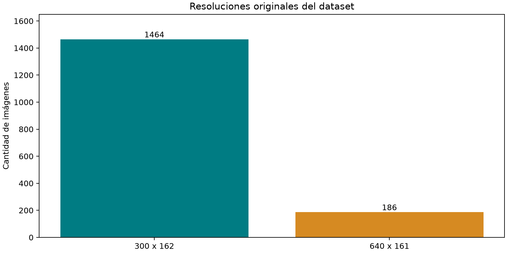
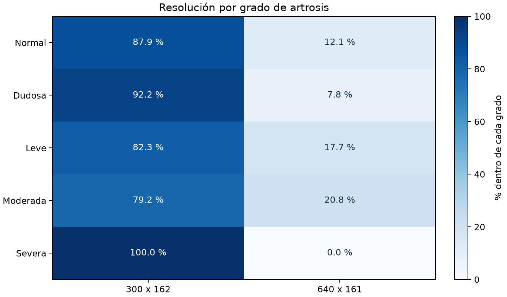
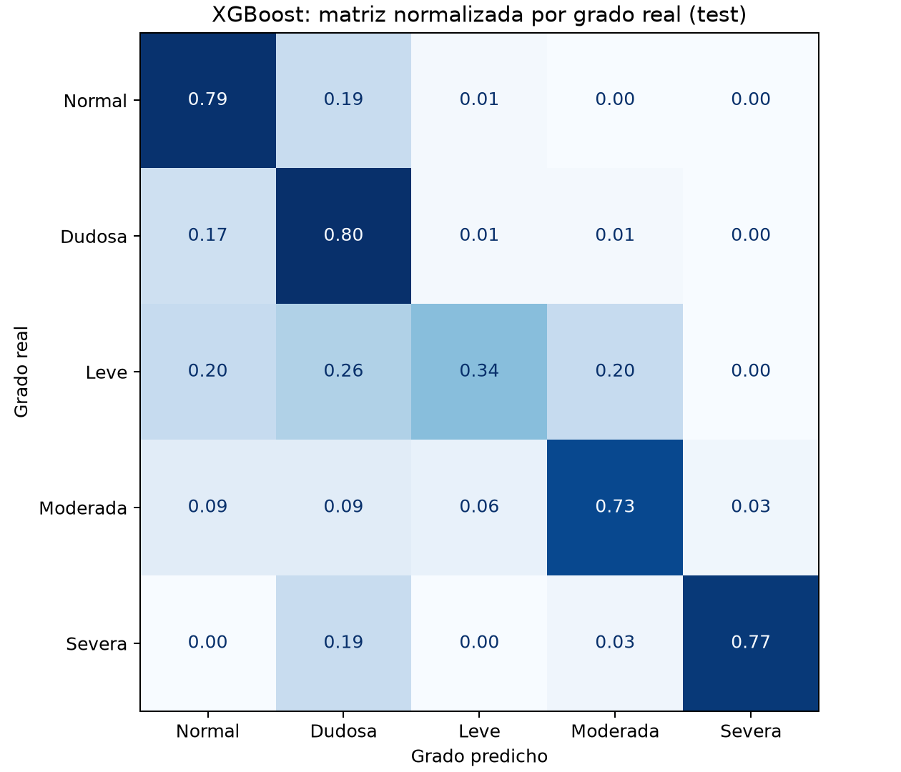
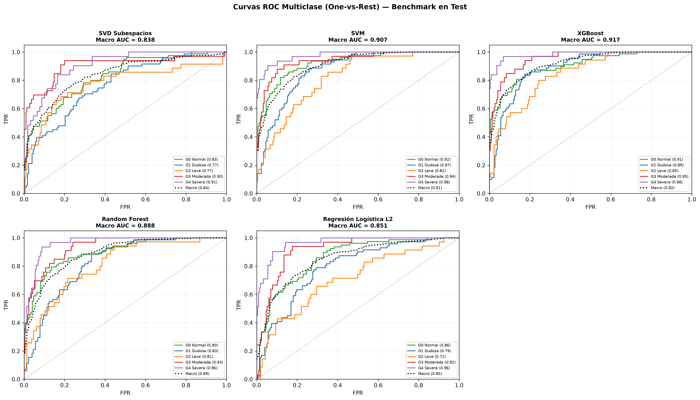
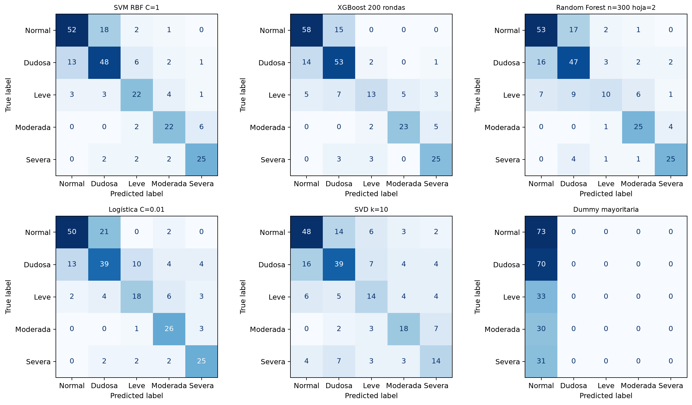
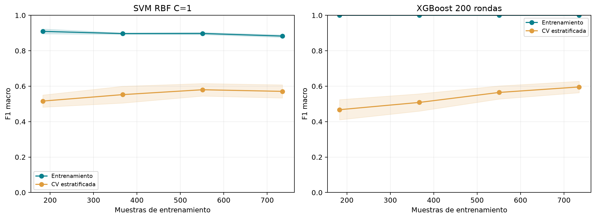

PROYECTO DE CURSO · INGENIERÍA ELECTRÓNICA
Clasificación de artrosis de rodilla con Machine Learning
Comparación de modelos clásicos para clasificar radiografías en cinco grados Kellgren–Lawrence, con evaluación en un conjunto reservado y análisis de errores.
Machine Learning 1 (23433) · Ingeniería Electrónica · Semestre 2026
Facultad de Ingeniería · Universidad Nacional de Asunción (FIUNA)
Jorge Javier Palma Martínez
jpalma@fiuna.edu.py · GitHub: J-Palma
Proyecto académico. El modelo no es un dispositivo médico y no debe utilizarse para diagnosticar ni tomar decisiones clínicas.
01 · PROBLEMA
Clasificación multiclase con grados ordenados
El objetivo es asignar cada estudio a uno de cinco grados de severidad. La progresión de Normal a Severa tiene un orden; por eso, además de la exactitud global, comparamos métricas que muestran el desempeño en cada clase.
La tarea es una clasificación supervisada multiclase: se predice una de cinco etiquetas ordenadas. Los modelos actuales tratan las categorías como clases nominales; no penalizan explícitamente la distancia entre grados.
Justificación de Machine Learning
Las radiografías varían en contraste, textura y formato. En lugar de fijar un umbral manual para cada grado, estudiamos si los modelos aprenden combinaciones de características a partir de ejemplos etiquetados. Esta comparación es experimental; no demuestra superioridad frente a la evaluación de un especialista.
Objetivo general
Comparar modelos clásicos para clasificar los cinco grados de artrosis a partir de radiografías de rodilla y documentar sus errores.
Objetivos específicos
- Explorar balance, resoluciones y composición de las particiones.
- Acondicionar las imágenes conservando su proporción y extraer 320 descriptores.
- Ajustar los modelos con entrenamiento y validación.
- Comparar métricas globales y por clase en prueba, identificando limitaciones y mejoras.
02 · CONJUNTO DE DATOS
1.650 radiografías en cinco grados



Variables y calidad de los datos
La entrada es una imagen en escala de grises y la salida es un grado entero de 0 a 4. La representación tabular contiene 320 variables numéricas: 5 estadísticas de intensidad, 3 medidas de gradiente/Laplaciano, 16 bins de histograma, 8 estadísticas espaciales y 288 componentes HOG. SVD emplea además 4.096 valores de píxeles.
Faltantes: no se imputa el contenido de una radiografía. La extracción detiene la ejecución si una imagen no se puede leer. Atípicos: se mantienen ambas resoluciones y los cinco grados; no se eliminan casos por severidad o resolución. No se realizó una auditoría clínica de valores atípicos. Codificación: la etiqueta se representa como 0–4; los descriptores son numéricos y no necesitan OneHotEncoder. Escalado: StandardScaler para regresión logística, SVM y SVD; los ensambles de árboles reciben descriptores sin ese escalado.
Las imágenes bilaterales aparecen en algunos grados; el análisis conserva una fila por estudio y registra el formato original para describir el conjunto.
03 · METODOLOGÍA
De la radiografía a los modelos
Las vistas bilaterales se separan para extraer descriptores por lado. La proporción se conserva durante el ajuste a tamaño fijo.
Explorar
Revisar clases, resoluciones y calidad de las imágenes.
Acondicionar
Separar vistas bilaterales, preservar proporciones y realzar contraste local.
Describir
Construir 320 características: intensidad, histogramas, gradientes y HOG.
Comparar
Ajustar hiperparámetros con validación y evaluar una vez sobre test.
REPRESENTACIÓN320 descriptores
HOG, Sobel, Laplaciano, histogramas y estadísticas espaciales.
REDUCCIÓNSVD por subespacios
Clasificación basada en la proyección y el residuo por grado.
VALIDACIÓNF1 macro
Promedia el F1 de las cinco clases con el mismo peso.
Algoritmos evaluados
- Regresión logística L2
- Baseline lineal regularizado sobre los 320 descriptores estandarizados.
- SVD por subespacios
- Construye una base de rango reducido por grado y asigna la clase con menor norma residual de proyección. El rango se elige con validación.
- SVM RBF
- Clasificador no lineal con kernel gaussiano; ajusta C y usa pesos de clase balanceados.
- Random Forest
- Promedia árboles entrenados con aleatoriedad de muestras y características; ajusta número de árboles y tamaño mínimo de hoja.
- XGBoost
- Agrega árboles de forma secuencial para reducir el error; compara el número de árboles con profundidad 4 y learning rate 0,05.
Particiones y prevención de fuga de información
La partición fija usa 70/15/15, semilla 42 y estratificación conjunta por clase y resolución: 1.155 imágenes de entrenamiento, 247 de validación y 248 de prueba. Los modelos y escaladores se ajustan primero con entrenamiento; después de elegir parámetros se reentrenan con entrenamiento + validación (1.402 imágenes). Test no interviene en ese ajuste.
Las curvas de aprendizaje de SVM y XGBoost usan StratifiedKFold de 3 folds, con barajado y semilla 42, dentro de entrenamiento. El escalador de SVM queda dentro del Pipeline de cada fold. El baseline usa 5 folds. La validación cruzada describe el aprendizaje; la búsqueda de parámetros usa la partición fija de validación.
Límite de independencia: la partición es por imagen. No se dispone de identificadores para comprobar separación por paciente ni se verificaron duplicados entre pacientes. Por ello, no se afirma ausencia total de data leakage ni generalización clínica.
Ajuste de hiperparámetros
Se implementa un barrido explícito de candidatos, entrenando en train y comparando F1 macro de validación, sin GridSearchCV ni Optuna. Se evalúan C = {0,001; 0,01; 0,1; 1; 10} para logística; k = {5, 10, 15, 20, 30, 50} para SVD; C = {0,1; 1; 10; 50} para SVM; {50, 100, 150, 200, 300} árboles para XGBoost; y {100, 200, 300} árboles con hoja mínima {1, 2} para Random Forest.
Parámetros elegidos: logística C = 0,01; SVD k = 30; SVM C = 50; XGBoost 300 árboles; Random Forest 200 árboles y hoja mínima 2.
Interpretación de métricas
F1 macro da igual peso a los cinco grados; balanced accuracy promedia el recall por clase. Accuracy cuenta la proporción total de aciertos, mientras precisión y recall macro muestran el equilibrio entre falsas asignaciones y casos recuperados. Las curvas ROC One-vs-Rest describen la discriminación de cada grado frente al resto y no reemplazan las métricas con la decisión final.
04 · RESULTADOS
XGBoost lidera en esta partición
La selección de hiperparámetros se hizo con validación. Las cifras siguientes corresponden al conjunto de prueba (N=248).
MEJOR F1 MACRO EN TEST
XGBoost
La tabla permite comparar la métrica principal y el balance de aciertos entre modelos.
0,706F1 macro
| Modelo | Accuracy | Balanced accuracy | F1 macro | Precisión macro | Recall macro |
|---|





Discusión de resultados y sobreajuste
XGBoost alcanza el mayor F1 macro de test (0,7057), seguido de SVM (0,6702). Su capacidad para combinar descriptores mediante decisiones no lineales es una explicación plausible de esta diferencia; el experimento no aísla una causa. En validación fija, SVM obtuvo F1 macro 0,7040 frente a 0,6025 de XGBoost, de modo que el orden cambia entre particiones. No hay evidencia para afirmar que XGBoost será siempre superior.
Hay una brecha compatible con sobreajuste: al mayor tamaño de las curvas, SVM alcanza F1 de entrenamiento 0,9994 y CV 0,6089; XGBoost, entrenamiento 0,9994 y CV 0,5733. Son resultados de CV dentro de train y no deben confundirse con el test de modelos reentrenados con 1.402 imágenes. El ajuste casi perfecto de entrenamiento no se traslada a datos retenidos.
Error principal: en XGBoost, Leve presenta F1 = 0,4706 y recall = 0,3429, frente a F1 = 0,8571 para Severa. La accuracy de 72,18 % no resume por sí sola esa diferencia. El tamaño de las clases y la similitud entre grados son hipótesis a investigar mediante revisión de errores.
05 · DISCUSIÓN
Alcance y limitaciones
Tamaño del dataset
1.650 imágenes permiten comparar modelos, pero no representan toda la variabilidad clínica o poblacional.
Desbalance de clases
Los grados tienen cantidades distintas; una sola métrica como accuracy no resume el rendimiento.
Evaluación académica
La prueba mide esta partición y este flujo. Hace falta evaluación externa antes de afirmar generalización.
Trabajo futuro
- Obtener identificadores de paciente, comprobar duplicados y separar los datos por persona.
- Evaluar en radiografías de otra fuente y analizar el efecto del formato unilateral/bilateral.
- Usar métricas ordinales que consideren la distancia entre grados y revisar errores con especialistas.
- Estudiar regularización, calibración y extractores preentrenados bajo las mismas particiones.
Conclusión: XGBoost obtuvo el mayor F1 macro entre los modelos comparados en el test disponible. El resultado es experimental y no valida uso clínico.
06 · DOCUMENTACIÓN
Notebooks y entregables
El README del proyecto describe las dependencias, la descarga del dataset y el orden de ejecución. Este portal consume métricas y figuras estáticas; no necesita una API para mostrar resultados.